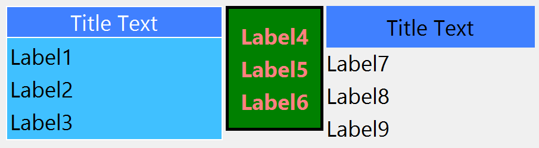

Creates a native container, which draws a frame with a title around its child. The decorations are manually drawn. The control inherits from IupBackgroundBox.
Ihandle* IupFlatFrame(Ihandle *child); [in C]
iup.flatframe{child: ihandle} -> (ih: ihandle) [in Lua]
flatframe(child) [in LED]
child: Identifier of an interface element which will receive the frame around. It can be NULL (nil in Lua), not optional in LED.
Returns: the identifier of the created element, or NULL if an error occurs.
Inherits all attributes and callbacks of the IupBackgroundBox, but redefines a few attributes.
DECORATION [read-only] (non inheritable): return Yes.
DECOROFFSET and DECORSIZE [read-only] (non inheritable): are calculated according FRAME, FRAMEWIDTH, FRAMESPACE and the title area.
BGCOLOR: background color of the child area. If not defined it will use the background color of the native parent.
FRAME (non inheritable): enables the frame line. Default: Yes. If value is CROSSTITLE the the frame at top crosses the title, like traditional frames in native systems (since 3.25). When CROSSTITLE is used TITLELINE and TITLEALIGNMENT are ignored, the title line is never drawn and alignment is always left.
FRAMECOLOR (non inheritable): frame line color. Default: the global attribute DLGFGCOLOR.
FRAMEWIDTH (non inheritable): frame line width. Default: 1.
FRAMESPACE (non inheritable): spacing between frame line and child area. Used only when FRAME=Yes. Default: 2.
TITLE (non inheritable): Text the user will see at the top of the frame.
TITLECOLOR (non inheritable): title text color. Default: the global attribute DLGFGCOLOR.
TITLEBGCOLOR (non inheritable): background color of the title area. If not defined BGCOLOR will be used (since 3.25).
TITLELINE (non inheritable): enables the title line. Horizontal line that separates the title area from the child area. Default: Yes.
TITLELINECOLOR (non inheritable): title line color. Default: the global attribute DLGFGCOLOR.
TITLELINEWIDTH (non inheritable): title line width. Default: 1.
TITLEIMAGE (non inheritable): image name to be used in title. Use IupSetHandle or IupSetAttributeHandle to associate an image to a name. See also IupImage.
TITLEIMAGEINACTIVE (non inheritable): image used in title when inactive. If it is not defined then the TITLEIMAGE is used and its colors will be replaced by a modified version creating the disabled effect. (since 3.22)
TITLEIMAGEPOSITION (non inheritable): position of the image relative to the text when both are displayed. Can be: LEFT, RIGHT, TOP, BOTTOM. Default: LEFT.
TITLEIMAGESPACING (non inheritable): spacing between the image and the text. Default: "2".
TITLEALIGNMENT (non inheritable): horizontal alignment. Possible values: "ALEFT", "ACENTER" and "ARIGHT". Default: "ACENTER".
TITLETEXTALIGNMENT (non inheritable): horizontal text alignment for multiple lines. Can be: ALEFT, ARIGHT or ACENTER. Default: ALEFT. (since 3.22)
TITLEPADDING (non inheritable): title internal margin. Default value: "0x0".
To replace a IupFrame by a IupFlatFrame you must set TITLELINE=No, TITLEALIGNMENT=ALEFT and FRAMECOLOR="160 160 160" (or a lighter version of the DLGFGCOLOR). But the line can not be positioned in the middle of the text like in IupFrame.
frame1 = IupFlatFrame
(
IupVbox
(
IupLabel("Label1"),
IupSetAttributes(IupLabel("Label2"), "SIZE=70x"),
IupLabel("Label3"),
NULL
)
);
frame2 = IupFlatFrame
(
IupVbox
(
IupSetAttributes(IupLabel("Label4"), "EXPAND=HORIZONTAL"),
IupLabel("Label5"),
IupLabel("Label6"),
NULL
)
);
frame3 = IupFlatFrame
(
IupVbox
(
IupLabel("Label7"),
IupSetAttributes(IupLabel("Label8"), "SIZE=70x"),
IupLabel("Label9"),
NULL
)
);
IupSetAttribute(frame1, "TITLE", "Title Text");
IupSetAttribute(frame1, "BGCOLOR", "64 192 255");
IupSetAttribute(frame1, "FRAMECOLOR", "255 255 255");
IupSetAttribute(frame1, "TITLELINECOLOR", "255 255 255");
IupSetAttribute(frame1, "TITLEBGCOLOR", "64 128 255");
IupSetAttribute(frame1, "TITLECOLOR", "255 255 255");
IupSetAttribute(frame1, "TITLELINEWIDTH", "2");
IupSetAttribute(frame1, "FRAMEWIDTH", "2");
IupSetAttribute(frame1, "FRAMESPACE", "5");
IupSetAttribute(frame2, "BGCOLOR", "0 128 0");
IupSetAttribute(frame2, "FRAMEWIDTH", "5");
IupSetAttribute(frame2, "FRAMESPACE", "20");
IupSetAttribute(frame2, "FGCOLOR", "255 128 128"); /* recursive set for labels */
IupSetAttribute(frame2, "FONTSTYLE", "Bold");
IupSetAttribute(frame2, "FONTSIZE", "14");
IupSetAttribute(frame3, "FRAME", "No");
IupSetAttribute(frame3, "TITLE", "Title Text");
IupSetAttribute(frame3, "TITLELINE", "No");
IupSetAttribute(frame3, "TITLEBGCOLOR", "64 128 255");
